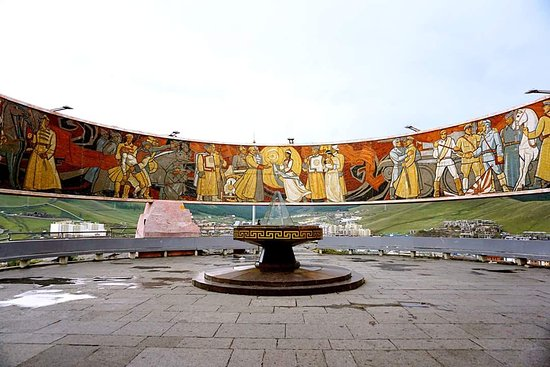

Zaisan is a popular meeting point among locals as well as tourists. The memorial is located on a hill in the southern part of the city, it features a circular memorial painting that depicts scenes of friendship between the people of the USSR and Mongolia.
Mongolian Buddhist monastery that has been restored and revitalized since 1990.